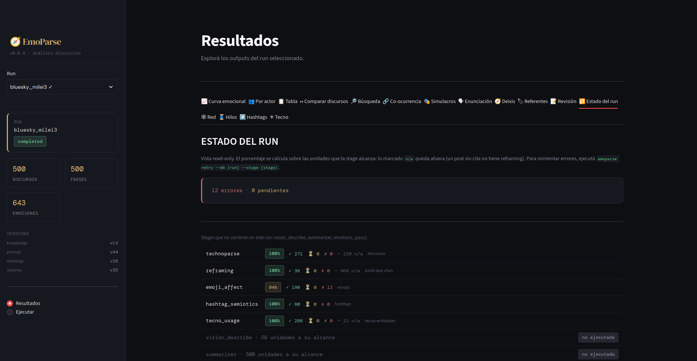
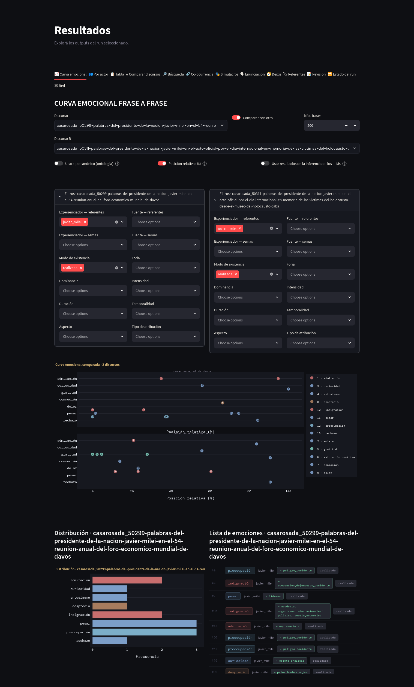
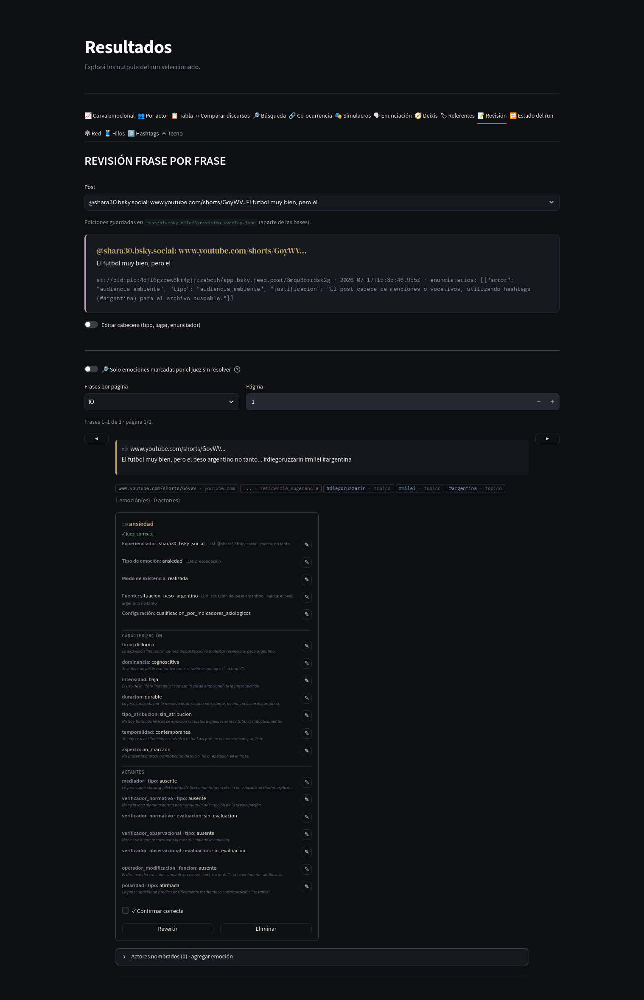
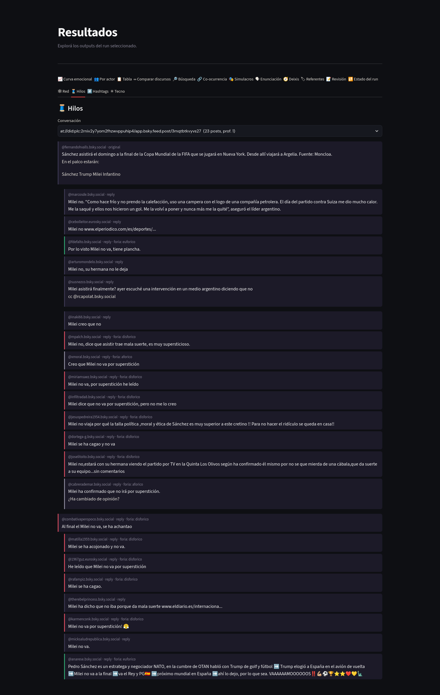
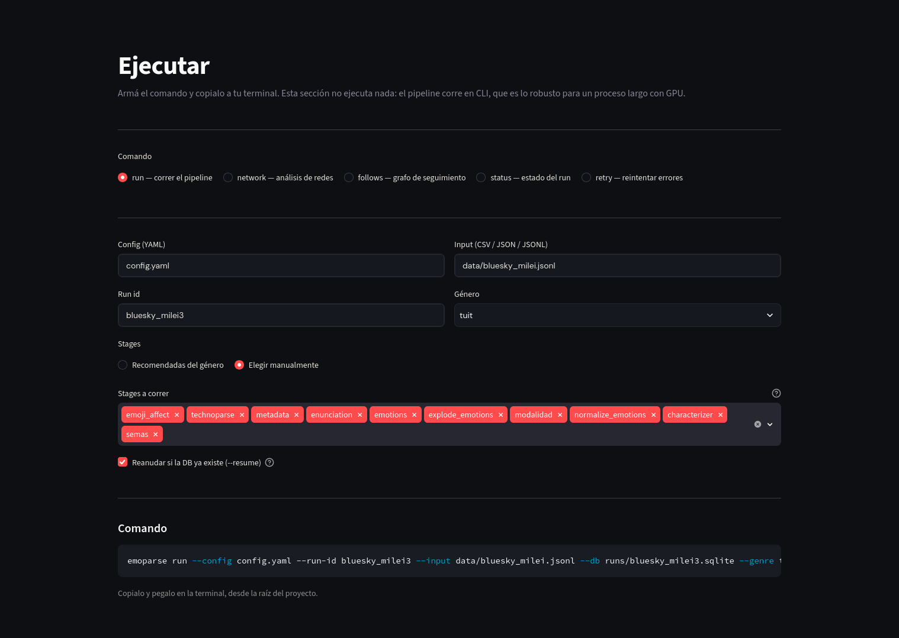

El tablero
Una aplicación que se abre en el navegador y lee los resultados de cada corrida. Sirve para dos cosas distintas: explorar lo que salió y corregir lo que haga falta. Las correcciones se guardan aparte y se pueden revertir.
1Qué es
El tablero corre en la misma computadora donde se hizo el análisis y se abre con un comando. Al arrancar, lista todas las corridas disponibles con su estado, y trabaja sobre la que se seleccione. La lectura de los resultados es de solo lectura: nada de lo que se haga en el tablero modifica el archivo original de la corrida hasta que se lo pida de manera explícita.

2Explorar resultados
Curva emocional
Un gráfico que recorre el discurso de principio a fin y ubica cada emoción en el punto donde aparece. Las emociones vienen numeradas y ordenadas por su orientación de valor dominante, del lado agradable al desagradable. Se puede filtrar por referente, por rasgo semántico de quien siente o de lo que desencadena, y por cualquiera de las dimensiones de caracterización. El eje horizontal admite posición absoluta o relativa, lo que permite comparar discursos de largo distinto. Se pueden poner dos discursos lado a lado, cada uno con sus propios filtros.

eufórica disfórica ambifórica afórica
Por actor
Una matriz de actores por emociones, donde el color indica la frecuencia, más un gráfico de dispersión que cruza orientación de valor con intensidad. Sirve para ver de un vistazo qué emociones se le atribuyen a cada actor del corpus.
Tabla
Exploración tabular con filtros encadenados a tres niveles, incluidas las columnas del análisis relacional. Exporta lo filtrado a un archivo de planilla.
Búsqueda
Busca por texto, con soporte para palabra suelta, frase exacta y término opcional, o por selección de una emoción, un actor, un experienciador o una fuente. Los resultados muestran cada unidad completa con su contexto inmediato, y debajo sus emociones agrupadas, cada una con quién la siente y qué la desencadena.
Co-ocurrencia
Qué emociones aparecen juntas en una misma unidad. Presenta una matriz coloreada por fuerza de asociación y un ranking de pares; al elegir un par, lista las unidades donde coexisten. En corpus de posts, la unidad de copresencia puede ser también el hilo o la etiqueta.
Simulacros
La reconstrucción completa de cada emoción con todas sus posiciones a la vista. Filtra por tipo de posición ocupada, por rasgos semánticos de quien siente y de lo que desencadena, por emoción y por texto.
Comparar discursos
Perfil emocional, gráfico radial, trayectoria a lo largo del texto y distribución comparada entre discursos. En corpus de posts, la trayectoria recorre conversaciones enteras.
3Revisar y corregir
Referentes
La vista donde se unifica el corpus. Muestra todas las marcas agrupadas bajo cada referente, con buscador, y permite aceptar, rechazar, quitar o reasignar cada vínculo, fusionar referentes entre sí, dar de alta y de baja, y editar los rasgos semánticos de cada uno. Incluye las acciones en lote y las fusiones sugeridas descritas en Cómo funciona.
Deixis
Revisión de las asignaciones propuestas para «yo», «nosotros» y «ustedes». Cada referente propuesto se puede descartar, restaurar o reemplazar por otro. Debajo aparecen las emociones donde esa marca interviene, y el referente se aplica una por una: reemplazar el que estaba o sumar el nuevo. Sumar un experienciador desdobla la emoción; sumar una fuente la agrega a la misma.
Enunciación
Edición de la situación de habla de cada discurso, con un botón para incorporar lo revisado al repertorio acumulado de ese enunciador.
Revisión
Lectura unidad por unidad, paginada, con las emociones en tarjetas al costado. Cada elemento muestra como valor principal el referente ya unificado y, en cuerpo menor, la inferencia original del modelo y la marca del texto. La edición aparece vacía y solo al pulsar su botón, de modo que una corrección sea siempre un acto deliberado. Si se corrió la segunda lectura por otro modelo, sus sugerencias aparecen al lado de cada elemento para aceptarlas o rechazarlas, con un filtro para ver únicamente lo que quedó sin resolver.

4Vistas de posts
Cuando la corrida contiene posts, aparecen cuatro vistas más.
- Hilos
- El árbol de la conversación, con la sangría marcando la profundidad de cada respuesta, la orientación de valor de cada post y la operación con que cada uno reencuadra lo que cita.
- Red
- El grafo interactivo coloreado por comunidad, la tabla de cuentas ordenadas por centralidad y el perfil emocional de cada comunidad. Conviven tres familias de grafo: las cuentas y sus vínculos, las emociones agrupadas por parecido, y los posts agrupados por contenido. Las dos últimas hacen que esta vista aparezca también en corpus de discursos.
- Etiquetas
- El ranking de etiquetas coloreado por la orientación de valor de su entorno, la distribución completa de funciones de cada una, y el detalle de cada aparición.
- Marcas del dispositivo
- La distribución de etiquetas, menciones, enlaces, emojis y tecnografismos, con el uso de cada uno en su contexto y las unidades donde aparece cada emoji.
Las vistas generales también se adaptan: la curva emocional pasa a mostrar la evolución de la conversación pública por etiqueta o por hilo, la co-ocurrencia agrupa por hilo o por etiqueta, y la revisión muestra cada post con sus marcas del dispositivo y sus imágenes, con navegación entre posts en los márgenes.

5Estado y comandos
Una vista muestra el progreso de todas las etapas, cada una en su granularidad real, y reúne las herramientas de trabajo por lotes: revisión agrupada de actores nuevos, incorporación de experienciadores corregidos a la base con propagación a las etapas que dependían de ellos, y edición de la base acumulada de actores.
Una sección aparte arma los comandos que hay que escribir en la consola. Se eligen las opciones con controles y el tablero muestra la línea lista para copiar. No ejecuta nada: el análisis corre en la consola, que es lo apropiado para un proceso largo.
